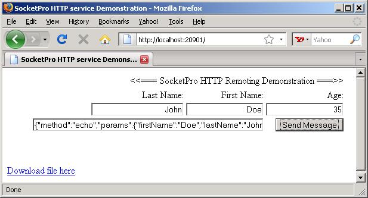
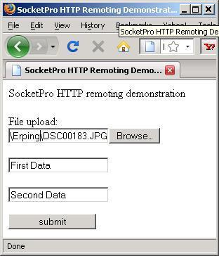
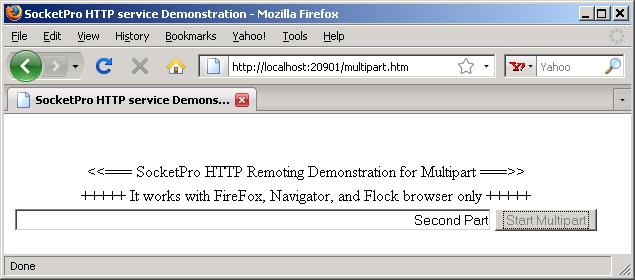

UDAParts
support@udaparts.com
5/18/2009
Contents
Previously, SocketPro was written to fully support binary remoting for the best performance and wonderful features on various window platforms. As it grows, some of our customers like to integrate our SocketPro with other development environments cross development languages and platforms. As you know, previous versions of SocketPro can not meet these requirements. After hard working for a while, we have upgraded our SocketPro to fully support HTTP protocol. Now, you can rely on SocketPro HTTP service to communicate with whatever development languages and platforms you like.
Pre-requirements and Preparation
Because SocketPro fully supports HTTP protocol versions 1.0 and 1.1, you should have a basic knowledge about HTTP although you don't have to know all of HTTP details. If you don't know HTTP, please use Google or Yahoo search engine to search for key words like 'HTTP protocol tutorial'. You will get tons of information about HTTP.
This tutorial tells you how to use basic features of SocketPro HTTP service. After compiling one of the tutorial samples inside the directory ..\udaparts\socketpro\tutorial, you need to copy the files inside the directory ..\udaparts\socketpro\tutorial\HTTPServiceSampleFiles into the directory of your compiled exe application. These files are used for testing. Note that there is no client sample application provided for this HTTP tutorial, but the client test application is your browser, FireFox, IE, Safari, Opera, Flock or else.
We would like you to use FireFox plus free plug-in FireBug. FireBug is the best free web browser debug tool available at this writing time. You can use the tool to debug HTTP transaction between browser and sample SocketPro on client side so that you can see how UDAParts SocketPro adapter (ujsonxml.js) works. It may require you to have some basic knowledge about JavaScript.
This tutorial requires you a simple understanding about JSON. In case you don't know JSON, please go to the site www.json.org. By default, SocketPro adapter for JavaScript uses JSON for serialization. The site contains all of JSON parsers for all types of development language.
The first step to support HTTP service is to add HTTP service into SocketPro server using the below code snippet.
private CSocketProService<CHttpPeer> m_HttpSvs = new CSocketProService<CHttpPeer>();
//
......
private
void AddService(){
bool ok;//add HTTP service into SocketPro server.
ok = m_HttpSvs.AddMe((
int)USOCKETLib.tagServiceID.sidHTTP, 0, tagThreadApartment.taNone);//process HTTP GET and POST using a worker thread in pool.
ok = m_HttpSvs.AddSlowRequest((short)USOCKETLib.tagHttpRequestID.idGet);
ok = m_HttpSvs.AddSlowRequest((short)USOCKETLib.tagHttpRequestID.idPost);
//automatically partition a large HTTP request like uploading a file into pieces, and process them using a worker thread in pool.
ok = m_HttpSvs.AddSlowRequest((short)USOCKETLib.tagHttpRequestID.idMultiPart);
}
The comments on above code snippet are important. We'll process HTTP GET and POST commands using a worker thread in pool because they usually require long time to process. Also, SocketPro will automatically partition a large HTTP requests into pieces and process them in a worker thread. One example is that a client may upload a huge file from browser onto a remote SocketPro server. We'll show you how to handle large file later.
As usual, HTTP service runs on a separate port 80. However, SocketPro integrates HTTP service with other binary services on the same port. Internally, SocketPro is able to figure out if HTTP command or other binary services on the fly. By this way, SocketPro does not require opening an extra port for running HTTP service.
SocketPro Preprocessing of HTTP Commands
As you know from previous tutorials or other samples, before sending a request you have to call IUSocket::SwitchTo for a specific service usually after a connection is made. Obviously, we can not make such a call through HTTP commands. To solve this problem, SocketPro internally figures out if a request is a HTTP command. If it is indeed one of HTTP commands, SocketPro will automatically fake a SwitchTo call on behave of a browser or other so that HTTP service runs like other binary transaction service with the same coding logic. Therefore, you can see the virtual functions, CSocketProServer::OnIsPermitted, CSocketProServer::OnSwitchTo, and CClientPeer::InSwitchFrom will be called as usual.
If a client sends a HTTP command to a SocketPro server, the server will also partition the command into two requests, idHeader and idGet (or idPost, idHead, idPut, idOptions, ......) automatically. Usually, the request idHeader runs in the main thread as a fast request, when SocketPro server knows HTTP command headers have just arrived. You can see the below code.
protected
override void OnFastRequestArrive(short sRequestID, int nLen){
base.OnFastRequestArrive(sRequestID, nLen); switch (sRequestID){
case (short)USOCKETLib.tagHttpRequestID.idHeader:m_nIndex = 0;
break; default:m_nIndex = 0;
break;}
}
When the above virtual function is called, you can see all of HTTP command properties inside the class CHttpPeerBase, which is derived from the class CClientPeer.
When a whole HTTP command arrives, SocketPro will inform your code with a proper HTTP request identification number, idGet, idPost, idPut, and so on. See the below code snippet.
protected
override int OnSlowRequestArrive(short sRequestID, int nLen){
Encoding enc = System.Text.UTF8Encoding.UTF8;
//code ignored here
return 0;
}
As you can see, we like you to process HTTP requests in the same way as you process binary transaction services. You can use SocketPro HTTP with XML, JSON, your defined text format, and other formats.
Handle One Simple HTTP Command
Let's look at one simple HTTP command by a sample code snippet.
switch
(PathName) //a CHttpPererBase property{
case "/": case "/udemo.htm": case "":SetResponseHeader(
"Content-Type", "text/html");m_UQueue.SetSize(0);
GetFile(
"udemo.htm"); //loading file udemo.htm into memory buffer.SendResult(sRequestID, m_UQueue);
break; case "/ujsonxml.js":SetResponseHeader(
"Content-Type", "application/x-javascript");
//trun off connection right after sending response
SetResponseHeader(
"Connection", "close");m_UQueue.SetSize(0);
GetFile("ujsonxml.js"); //loading file ujsonxml.js into memory buffer.
SendResult(sRequestID, m_UQueue);
break;
default: break;}
After looking through the above code snippet, you can set a HTTP response header easily. Afterwards, you can load a file or others objects into a memory buffer (m_UQueue). At the end, send a HTTP response back to a client by calling the method SendReturnData. Note that you can send a binary data array onto a client if it supports binary HTTP transaction.
One of particular SocketPro HTTP features is that you can turn off socket connection easily by setting response header Connection as shown in the above. By default in HTTP version 1.1, SocketPro HTTP will not turn off the underlying TCP socket connection so that it may help HTTP performance in many cases.
To experiment the above code snippet, simply use a browser, and type http://localhost:20901/ if you already copy files into application directory as described in the above section.

SocketPro is written with 100% non-blocking communication. It works greatly for handling a request that requires transferring a large size of any data as shown in the tutorial 3, window file, OLEDB and our ADO.NET remoting services. It also works very well for HTTP.
Uploading a large file from browser to SocketPro server: This usually gives you a headache for other communication frameworks, but sending a large file from a browser to SocketPro server is very easy. To demonstrate how it works within SocketPro, use a browser and type http://localhost:20901/fupload.htm, and see how the below code execute.
case
(short)USOCKETLib.tagHttpRequestID.idMultiPart:m_nIndex++;
Console.Write("Size = "); Console.Write(nLen.ToString()); Console.Write(", index = "); Console.WriteLine(m_nIndex.ToString());
//data in buffer m_UQueue.
break;
SocketPro fully supports HTTP multipart header. When it detects such a header from a HTTP POST request, by default it will partition a large request into a set of fake requests idMultiPart. By this way, it will supports transferring a large file from a client (browser) without consuming a large memory. This makes SocketPro faster and extremely scalable.

Downloading a large file from SocketPro server: Transferring a large amount of data from SocketPro server onto a client is also extremely easy and elegant. SocketPro always streams data between any client and server although it does not look so at the first glance. There are two ways to do so. The first way is to stream data in chunks as below code snippet. Use a browser, type http://localhost:20901/, and click the link Download file here as shown in the previous section.
private
void DownloadFile(string strFile){
int res; int nBufferSize = 10240; FileStream readIn = new FileStream(strFile, FileMode.Open, FileAccess.Read);//tell a client the size of the coming file
bool ok = SetResponseHeader("Content-Length", readIn.Length.ToString()); byte[] buffer = new byte[nBufferSize]; int nRead = readIn.Read(buffer, 0, nBufferSize); while (nRead > 0){
res = SendReturnData((
short)USOCKETLib.tagHttpRequestID.idGet, buffer, nRead); if (res < 0) //client cancels downloading or shuts down TCP/IP connection break;nRead = readIn.Read(buffer, 0, nBufferSize);
}
readIn.Close();
}
case
"/sampledownload.dll":SetResponseHeader(
"Connection", "close");DownloadFile(
"sampledownload.dll"); break;The code snippet is able to monitor TCP connection shutdown or client canceling downloading. If it happens, the code is able to break the loop elegantly. In case you don't know the data size ahead, you can set the header Content-Length to a larger size, and set the header Connection to close. Afterwards, it will work for you too. Modify the above second code snippet to handle a larger file, pay close attention to server memory consumption, and see how it works for you.
The second way is to use HTTP header multipart. See the below section.
HTTP multipart header fully supported: As shown in the above section, SocketPro fully supports HTTP multipart header on both client and server sides. See the below code for implementing HTTP server push for browsers FireFox, Flock and Netscape. Starts a firefox browser, and type http://localhost:20901/multipart.htm.
case
"/mpart":SetResponseHeader(
"Keep-Alive", "10"); //10 seconds
//starts multipart here
SetResponseHeader(
"Content-Type", "multipart/x-mixed-replace; boundary=rnA00A");
m_UQueue.SetSize(0);
SetResponseHeader(
"Content-Type", "application/xml; charset=utf-8");m_UQueue.Push(enc.GetBytes(
"<?xml version='1.0'?>"));m_UQueue.Push(enc.GetBytes(
"<content>First Part</content>"));SendResult(sRequestID, m_UQueue);
System.Threading.
Thread.Sleep(5000);
m_UQueue.SetSize(0);
SetResponseHeader(
"Content-Type", "application/xml; charset=utf-8");m_UQueue.Push(enc.GetBytes(
"<?xml version='1.0'?>"));m_UQueue.Push(enc.GetBytes(
"<content>Second Part</content>"));SendResult(sRequestID, m_UQueue);
System.Threading.
Thread.Sleep(5000);
m_UQueue.SetSize(0);
SetResponseHeader("Content-Type", "application/xml; charset=utf-8");
m_UQueue.Push(enc.GetBytes("<?xml version='1.0'?>"));
m_UQueue.Push(enc.GetBytes("<content>Third Part</content>"));
SendResult(sRequestID, m_UQueue);
System.Threading.Thread.Sleep(5000);
m_UQueue.SetSize(0);
SetResponseHeader("Content-Type", "application/xml; charset=utf-8");
m_UQueue.Push(enc.GetBytes("<?xml version='1.0'?>"));
m_UQueue.Push(enc.GetBytes("<content>Fourth Part</content>"));
SendResult(sRequestID, m_UQueue);
System.Threading.Thread.Sleep(5000);
m_UQueue.SetSize(0);
SetResponseHeader("Content-Type", "application/xml; charset=utf-8");
m_UQueue.Push(enc.GetBytes("<?xml version='1.0'?>"));
m_UQueue.Push(enc.GetBytes("<content>Ended</content>"));
SendResult(sRequestID, m_UQueue);
//tell browser the multipart response is ended
SendResult(sRequestID);
break;

HTTP chunked header supported on server side: You can use HTTP chunk header to batch multiple responses into a single one using one TCP connecting for better performance and network efficiency. The coding is the same as the above. Use a browser, type http://localhost:20901/chunked.htm, and see the code snippet below.
case
"/chunked.htm":SetResponseHeader(
"Content-Type", "text/html");SetResponseHeader(
"Transfer-Encoding", "chunked");
//starts chunks here
m_UQueue.SetSize(0);
m_UQueue.Push(enc.GetBytes("<script type='text/javascript'>"));
GetFile("ujsonxml.js");
m_UQueue.Push(enc.GetBytes("</script>"));
SendResult(sRequestID, m_UQueue);
m_UQueue.SetSize(0);
GetFile("chunked.htm");
SendResult(sRequestID, m_UQueue);
//tell browser the chunked response is ended
SendResult(sRequestID);
break;The above code combines three files into one bigger HTTP response from three chunks, json.js, ujsonxml.js and chunked.htm. In many cases, it does help performance!
HTTP server-sent events supported: Beginning from version 9, Opera browser supports Server-sent events. SocketPro HTTP has already supported this feature. However, we don't have code snippet to demonstrate this feature because this feature is supported by Opera only.